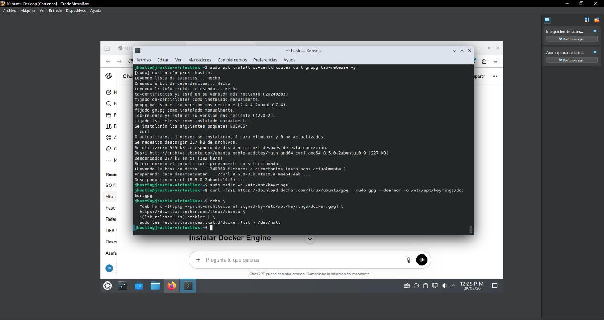
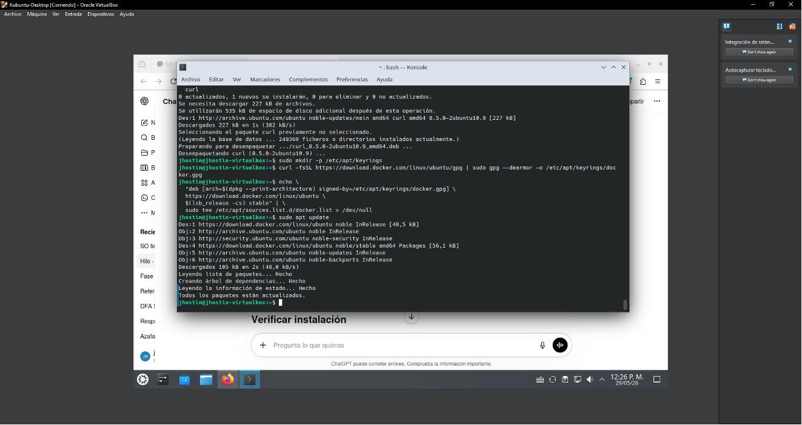
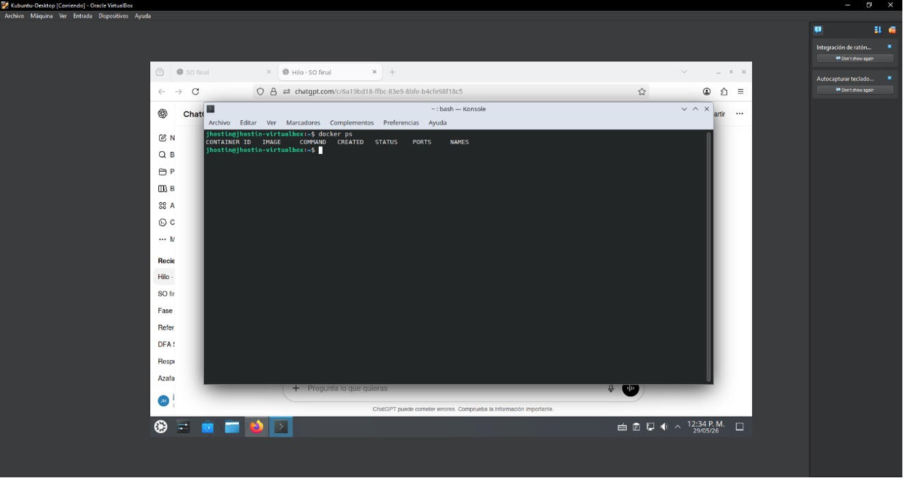
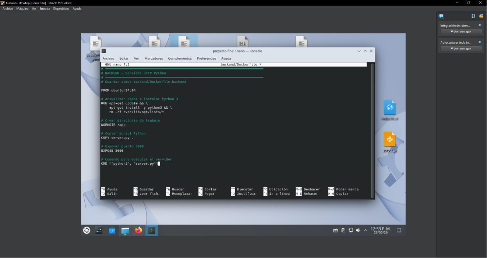
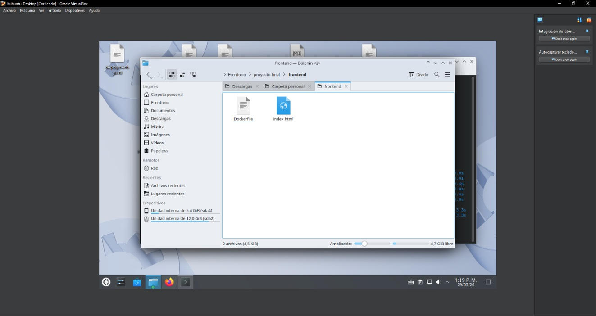

sudo tee /etc/apt/sources.list.d/docker.list > /dev/null”

Instalar Docker engine con “sudo apt update” y
“sudo apt install docker-ce docker-ce-cli containerd.io docker-buildx-plugin docker-compose-plugin”

Verificar instalación “docker --version”, permitir Docker sin sudo “sudo usermod -aG Docker $USER” y reiniciar para aplicar cambios con “reboot”
Verificar Docker con “docker ps”

Crear las carpetas back y front con “mkdir -p proyecto-final/frontend” y “mkdir -p proyecto-final/backend”, luego se creaDocker file tanto front end como back end, para crear “touch Dockerfile.frontend/ Dockerfile.backend” y para modificar con “nano Dockerfile.frontend/ Dockerfile.backend”

Carpeta con todos los archivos

Construir “docker compose build” y ejecutar “docker compose up -d” contenedores